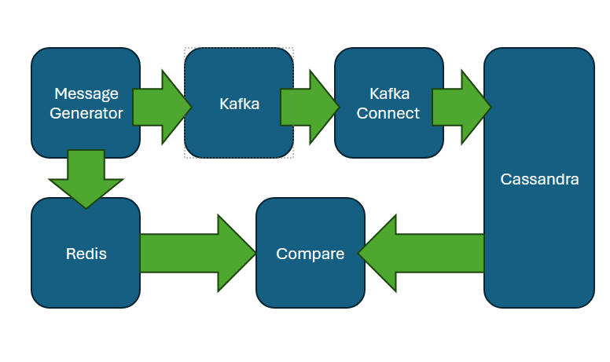
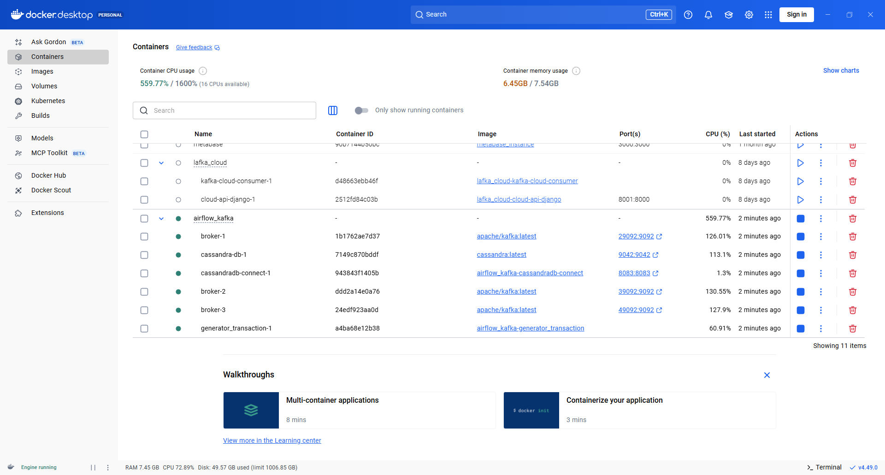
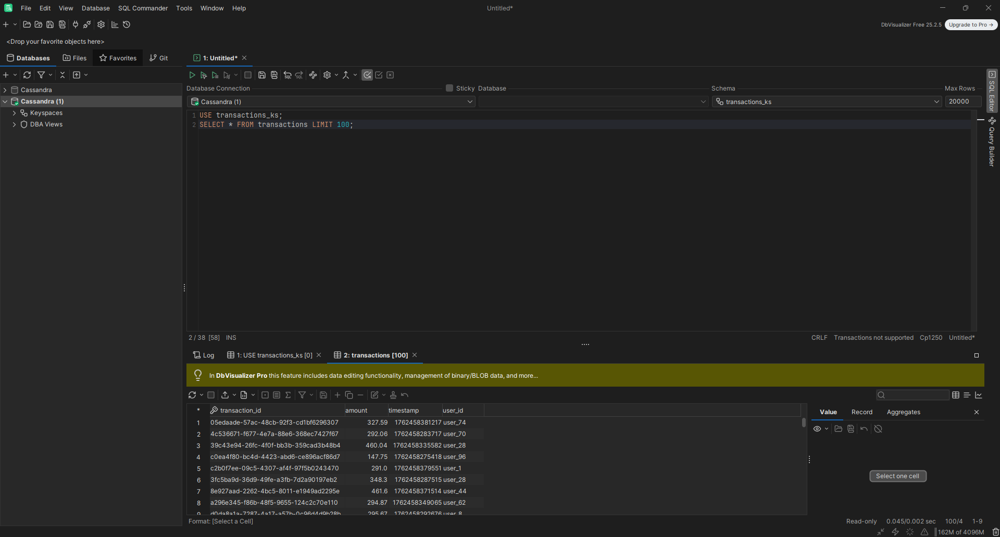
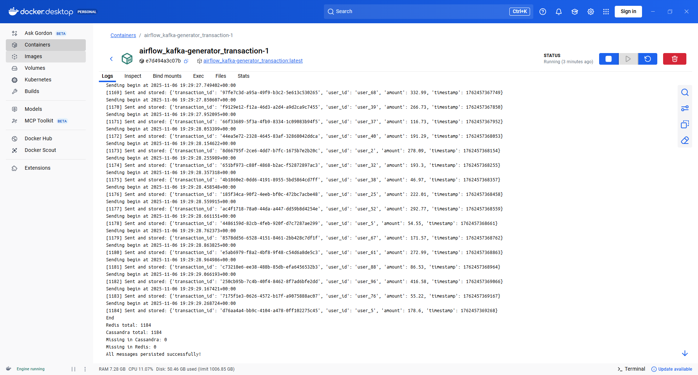

services:
generator_transaction:
build: ./generator_transactions
command: bash -c "bash begin.sh || true; tail -f /dev/null"
volumes:
- ./generator_transactions:/app
depends_on:
...
cassandra-db:
image: cassandra:latest
ports:
- 9042:9042
environment:
...
#volumes:
#- cassandra_data:/var/lib/cassandra
healthcheck:
...
cassandradb-connect:
build: ./connector
ports:
- 8083:8083
environment:
...
depends_on:
- broker-1
- cassandra-db
healthcheck:
...
broker-1:
image: apache/kafka:latest
container_name: broker-1
ports:
- 29092:9092
environment:
...
healthcheck:
...
broker-2:
image: apache/kafka:latest
container_name: broker-2
ports:
- 39092:9092
environment:
...
depends_on:
broker-1:
condition: service_healthy
broker-3:
image: apache/kafka:latest
container_name: broker-3
ports:
- 49092:9092
environment:
...
depends_on:
broker-1:
condition: service_healthy
redis:
image: redis:7
container_name: redis
ports:
- "6379:6379"
command: ["redis-server", "--save", "", "--appendonly", "no"]
healthcheck:
...
#volumes:
# cassandra_data:Scalability and data replication in Kafka - testing the resilience of a Kafka cluster to broker host failures. Cassandra and Kafka Connect basics
Intorduction
The purpose of this paper is to evaluate the Kafka Messaging Broker in terms of its two advantages: scalability and resilience to broker instance failures. These are the main advantages of Kafka, which make it more efficient and easier to implement than brokers such as RabbitMQ or ActiveMQ.
To achieve this, a container cluster was created in Docker-Compose, containing: - Generator - Kafka broker - three hosts with three instances - Kafka Connect - Cassandra Sink - Cassandra database - Host with Redis cache (only for Kafka performance verification)
It works by broadcasting messages from a generator, which are then sent to Kafka Connect via Kafka and written to the Cassandra database. For later verification, the generated messages are simultaneously written to the host running Redis.
Sustainability verification involves running a .sh script that starts the cluster and then shuts down one of the brokers. After broadcasting, the number of messages in Redis will be compared with the number of messages in Cassandra. Additionally, load tests will be conducted to demonstrate Kafka’s horizontal scaling, with the loggers handling individual partitions under hardware load while broadcasting messages to a topic.
The cluster code is located in the following repository:
1. Demonstration project
To verify Kafka’s fault tolerance and scalability, a cluster of hosts must be developed, which includes a data generator that writes messages to a Kafka topic and to Redis. Another element is at least three Kafka brokers to establish quorum to determine whether messages in a topic are valid after the loss of one host. A Zookeeper metadata server, although this can be replaced by an additional controller function on one or more hosts, and Kafka Connect to receive messages from a Kafka topic and write them to Cassandra. A diagram of this message flow is shown below:

Below is a shortened code in docker-compose that implements the above architecture in a cluster.
The above cluster can be started with the cluster.sh script, which also shuts down one of the Kafka brokers to verify fault tolerance.
echo "Starting the cluster..."
docker-compose up --build -d
echo "Waiting for the generator_transaction container to start..."
while true; do
STATUS=$(docker inspect -f '{{.State.Running}}' $(docker-compose ps -q generator_transaction) 2>/dev/null)
if [ "$STATUS" == "true" ]; then
echo "The generator_transaction container is running."
break
fi
sleep 2
done
echo "Waiting for 50 seconds..."
sleep 50
echo "Forcefully stopping the broker-2 container..."
docker kill $(docker-compose ps -q broker-2)
echo "Done."1.1. Generator/comparator host
The generator container contains several Python scripts, including the begin.sh script, which runs the message. The purpose of each script is to prepare the remaining components to accept messages and start the message generation process.
1.2. Kafka Connect - Cassandra sink host
One necessary process is configuring Kafka Connect to work with Kafka brokers and the Cassandra database. This is accomplished by sending configuration JSON to the appropriate URL. The sent configuration JSON is shown below:
{
"name": "cassandra-sink-connector",
"config": {
"connector.class": "io.confluent.connect.cassandra.CassandraSinkConnector",
"tasks.max": "1",
"topics": "transactions",
"cassandra.contact.points": "cassandra-db",
"cassandra.port": "9042",
"cassandra.keyspace": "transactions_ks",
"cassandra.local.datacenter": "DC1",
"cassandra.consistency.level": "LOCAL_ONE",
"cassandra.username": "",
"cassandra.password": "",
"key.converter": "org.apache.kafka.connect.json.JsonConverter",
"key.converter.schemas.enable": "false",
"value.converter": "org.apache.kafka.connect.json.JsonConverter",
"value.converter.schemas.enable": "false",
"cassandra.table.name.format": "${topic}",
"insert.mode": "insert",
"confluent.topic.bootstrap.servers": "broker-1:19092,broker-2:19092,broker-3:19092"
}
}2. Kafka Scalability - Multiple Partitions and Brokers
To demonstrate Kafka’s scalability - handling different partitions of a given topic by different hosts - you need to properly configure the topic to which messages will be sent and set, for example, three partitions.
from kafka.admin import KafkaAdminClient, NewTopic
from datetime import datetime
admin_client = KafkaAdminClient(
bootstrap_servers = "broker-1:19092,broker-2:19092,broker-3:19092",
client_id = "admin_config"
)
topic = NewTopic(
name = "transactions",
num_partitions=3,
replication_factor=3
)
admin_client.create_topics(new_topics=[topic], validate_only=False)
now = datetime.now()
print(f"Kafka Topic created {now}")Next, it is necessary to develop the Kafka producer code that sends messages to the previously created topic.
from kafka import KafkaProducer
import redis
import json, time, uuid, random, datetime
producer = KafkaProducer(
bootstrap_servers="broker-1:19092,broker-2:19092,broker-3:19092",
value_serializer=lambda v: json.dumps(v, default=str).encode("utf-8"),
acks='all',
retries=5
)
r = redis.Redis(host='redis', port=6379, db=0)
start_time = time.time()
duration = 120
counter = 0
while time.time() - start_time < duration:
now = datetime.datetime.now(datetime.timezone.utc)
print(f"Sending begin at {now}")
msg = {
"transaction_id": str(uuid.uuid4()),
"user_id": f"user_{random.randint(1,100)}",
"amount": round(random.uniform(10.0, 500.0), 2),
"timestamp": int(now.timestamp() * 1000)
}
future = producer.send(
"transactions",
key=json.dumps({"transaction_id": msg["transaction_id"]}).encode("utf-8"),
value=msg
)
try:
record_metadata = future.get(timeout=20)
r.set(msg["transaction_id"], json.dumps(msg))
counter += 1
print(f"[{counter}] Sent and stored:", msg)
except Exception as e:
print("Error sending to Kafka:", e)
time.sleep(0.0001)
producer.flush()
producer.close()
print("End")With the data architecture cluster elements already in place, you can see how—despite creating a single topic with three partitions—the load is distributed across three hosts serving the topic in three partitions. The figure below clearly shows that the hosts with brokers handling partitions and replicas are under heavy load, demonstrating that horizontal scalability has been achieved in Kafka.

3. Broker fault tolerance - data replicas across multiple brokers
The purpose of this chapter is to demonstrate Kafka’s resilience to broker failures through its replication mechanism. This replication mechanism is ensured by a proper declaration when creating a topic, as seen in the following code:
topic = NewTopic(
name = "transactions",
num_partitions=3,
replication_factor=3
)Once the cluster is up and running, one of the brokers—broker-2—can be forcibly shut down, simulating a server failure. This will result in a series of logs appearing on other Kafka brokers, indicating the event.
The most important ones are listed below.
The first exception thrown is when broker-1 loses connection to broker-2:
java.io.IOException: Connection to broker-2:19092 (id: 2 rack: null isFenced: false) failed.Then the connection closure is confirmed:
Client requested connection close from node 2 (org.apache.kafka.clients.NetworkClient)To ensure data replication, broker-1 sends fetch request messages to broker-2. In this case, the client reports an error that it is not sending a fetch request to receive data for replication because broker-2 is no longer available.
Error sending fetch request (sessionId=700883982, epoch=INITIAL) to node 2:The next log indicates that broker-1 stopped fetching data from broker-2. The fact that broker-1 was fetching data and then stopped doing so indicates that broker-2, which was shut down, was the partition leader.
Removed fetcher for partitions Set(_confluent-command-0, transactions-0)Next, a new partition leader is elected, from which other brokers with partition replicas will fetch data for replication. Broker-3 was chosen as the new leader, and fetch requests will be sent to it for partition replication.
Added fetcher to broker 3 for partitions HashMap(transactions-1 -> InitialFetchState(... BrokerEndPoint(id=3, host=broker-3:19092),1,157))Then, a confirmation is received in the logs that the process responsible for data replication from broker-2 has been closed - so as not to try to download data from broker-2, which is not available.
ReplicaFetcherThread-0-2: Shutting down ... Shutdown completedNext, the number of messages written to Redis and stored in Cassandra is verified. It’s clear that the numbers match. This means that despite a broker failure, all messages were delivered to Kafka Connect and stored in Cassandra. The figure below shows sample data stored in Cassandra - in DbVisualizer.

In order to verify the amount of data stored in Redis and Cassandra, a special Python script was developed, as shown below:
from cassandra.cluster import Cluster
import redis, json
cluster = Cluster(['cassandra-db'])
session = cluster.connect('transactions_ks')
r = redis.Redis(host='redis', port=6379, db=0)
keys = r.keys('*')
redis_data = {k.decode(): json.loads(r.get(k)) for k in keys}
rows = session.execute("SELECT transaction_id, user_id, amount, timestamp FROM transactions")
cassandra_data = {row.transaction_id: {
"transaction_id": row.transaction_id,
"user_id": row.user_id,
"amount": row.amount,
"timestamp": row.timestamp
} for row in rows}
missing_in_cassandra = set(redis_data.keys()) - set(cassandra_data.keys())
missing_in_redis = set(cassandra_data.keys()) - set(redis_data.keys())
print(f"Redis total: {len(redis_data)}")
print(f"Cassandra total: {len(cassandra_data)}")
print(f"Missing in Cassandra: {len(missing_in_cassandra)}")
print(f"Missing in Redis: {len(missing_in_redis)}")
if missing_in_cassandra:
print("Not in Cassandra:", list(missing_in_cassandra)[:10])
else:
print("All messages persisted successfully!")The screenshot below shows that the script executed correctly and the data in Redi and Cassandra matches, confirming that all messages reached Kafka Connect despite the broker failure.

4. Summary
Creating a topic with multiple partitions enabled us to leverage one of Kafka’s greatest advantages: scalability. Including a large message stream in a topic with three partitions resulted in a strong and even load on all three hosts with Kafka brokers.
A sudden interruption of the broker—serving a specific partition—did not result in message loss thanks to the replication mechanism, which should be specified when declaring the Kafka topic.
Kafka met the requirements, but if the number of hosts in the cluster is limited, consider using inter-cluster Kafka replication, such as Mirror Maker 2.